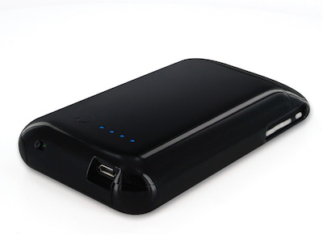
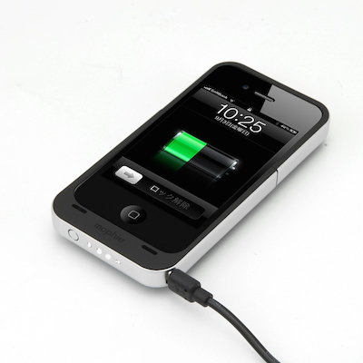
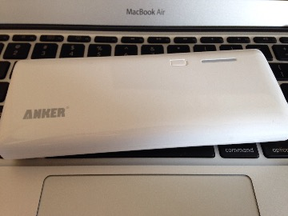
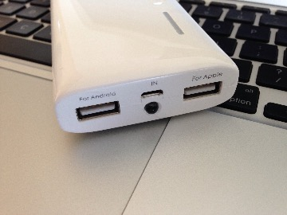
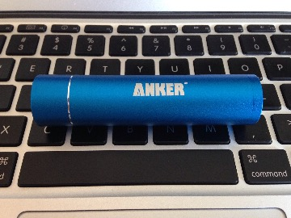
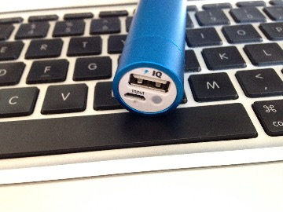

バッテリー¶
- mophie Juice Pack Air for iPhone 3G 1200mAh
- mophie Juice Pack Air for iPhone 4S/4 1500mAh
- mophie Juice Pack Helium for iPhone 5S/5 1500mAh
- Anker ウルトラスリムバッテリーケース iPhone6 2850mAh
- Anker Astro M3 13000mAh
- Anker Astro Mini 第2世代 3350mAh
- Anker PowerCore 10400mAh
- cheero Power Plus DANBOARD version -mini- 6000mAh
- HyperJuice2 27000mAh
mophie Juice Pack Air for iPhone 3G 1200mAh¶
| 使用期間 | xxxx/xx/xx-xxxx/xx/xx |
|---|---|
| 公式サイト | Juice Pack Air for iPhone 3G：フォーカルポイント株式会社 |
| 購入サイト | ヨドバシカメラ |
バッテリーケースはJuice Pack一筋だけど、今にして思えば一番いい感じだったのが3GSで使っていたこれ。

公式サイトより、充電口、スイッチ、ランプ
充電口、スイッチ場所¶
| 充電口 | 下部(Micro USB) |
|---|---|
| 充電ON/OFFスイッチ | 下部 |
| 容量確認ランプ/スイッチ | 背面 |
mophie Juice Pack Air for iPhone 4S/4 1500mAh¶
| 使用期間 | xxxx/xx/xx-xxxx/xx/xx |
|---|---|
| 公式サイト | Juice Pack Air for iPhone 4S/4：フォーカルポイント株式会社 |
| 購入サイト | ヨドバシカメラ |
4S/4用のもの。本体の変化にあわせてか、こちらも形状を大きく変更し 使いづらくなった 。

公式サイトより、スイッチ、ランプ(充電口は反対側についている)
充電口、スイッチ場所¶
| 充電口 | 右側面下部(Micro USB) |
|---|---|
| 充電ON/OFFスイッチ | 左側面下部 |
| 容量確認ランプ/スイッチ | 下部 |
mophie Juice Pack Helium for iPhone 5S/5 1500mAh¶
| 使用期間 | xxxx/xx/xx-xxxx/xx/xx |
|---|---|
| 公式サイト | Juice Pack Helium for iPhone 5S/5：フォーカルポイント株式会社 |
| 購入サイト | ヨドバシカメラ |
充電口、スイッチ場所¶
| 充電口 | 下部(Micro USB) |
|---|---|
| 充電ON/OFFスイッチ | 背面 |
| 容量確認ランプ/スイッチ | 背面 |
良い点悪い点¶
- ON/OFFスイッチの場所以外は元鞘に収まって良かった
- スイッチに関しては、別にどこにあっても気にしない
- が、 以下の理由でこれが歴代で一番最悪
- Juice Packシリーズは「上半分のパーツ」と「下半分のパーツ」からなっていて、iPhoneを挟みこむようにして固定するようになっている
- 3GS, 4S/4時は「下半分のパーツ」がバッテリーの役割を果たしていて、「上半分のパーツ」はカバーとして固定するだけというか、ぶっちゃけなくても問題ないものだった
- しかし、本機は「上半分のパーツ」がバッテリーの役割を果たしていて、 「下半分のパーツ」とドッキングしないとバッテリーとして使用できない
- このドッキング部分がヘタってくるときちんと充電されないので、非常に使いづらい
- Lightningケーブルに変更された事が関係しているんだろうか…？
- 以降のiPhoneでmophie製のものを買うかどうかは検討中、一応、良かった頃に戻ってはいるようだけど…
これは、また違う形式っぽい
Anker ウルトラスリムバッテリーケース iPhone6 2850mAh¶
| 使用期間 | 2015/10/10- |
|---|---|
| 公式サイト | ANKER ウルトラスリムバッテリーケース |
| 購入サイト | Amazon |
- これが2850mAh/86gに対してJuice Pack Air for iPhoneは2750mAh/100gだったので、今回からAnkerにしてみた
- これでもiPhone6sに装着するとかなり重い
- 滑りにくいという口コミが多いけど、するする滑るぞこれ
Anker Astro M3 13000mAh¶
| 使用期間 | 2014/02/06- |
|---|---|
| 公式サイト | Anker Astro M3 13000mAh モバイルバッテリー |
| 購入サイト | Amazon |
- ハイパワー電源アダプタが付属したAmazon限定セットというものだった
- 屋外でモバイルWi-Fiやスマホの充電をしたい時に鞄に入れてる
- 意外とでかい

全体

ポート部分
Anker Astro Mini 第2世代 3350mAh¶
| 使用期間 | 2015/06/26- |
|---|---|
| 公式サイト | Anker Astro Mini モバイルバッテリー 3350mAh |
| 購入サイト | Amazon |
- 上記のAstro M3が意外とでかかったので購入
- 一応、常時使い用になるのかな

全体

ポート部分
Anker PowerCore 10400mAh¶
| 使用期間 | 2015/08/15- |
|---|---|
| 公式サイト | ANKER PowerCore 10400 |
| 購入サイト | Amazon |
- 「VoltageBoostテクノロジーがケーブル内の抵抗を認識し、出力電圧を自動調整することで、ケーブル毎に最適な速度で充電が可能です」ということで、デバイスごとにUSBポートを選ばなくなって便利
cheero Power Plus DANBOARD version -mini- 6000mAh¶
| 使用期間 | 2015/10/11- |
|---|---|
| 公式サイト | cheero Power Plus DANBOARD version -mini- | cheero |
| 購入サイト | Amazon |
- これ以上バッテリー増やしてどーすんだと思いつつ、タイムセールにつられて買ってしまった
- 完全に観賞用
HyperJuice2 27000mAh¶
| 使用期間 | 2015/01/18- |
|---|---|
| 公式サイト | HyperJuice / HyperDrive iUSBport |
| 購入サイト | ヨドバシカメラ |
- 使用中のMacBook Airのバッテリーが2時間持つか持たないかになってしまい、PCを新調するか外部バッテリーを使ってみるかどちらにしようか迷ってバッテリーにしてみた
- MBAへの充電にはC28 Z6ケーブルを通して行っている。今のところ、不具合なく充電できている